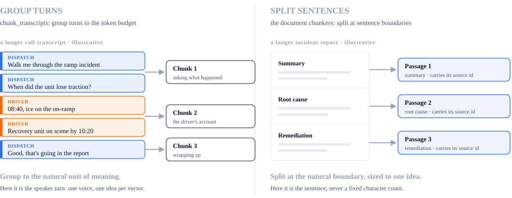
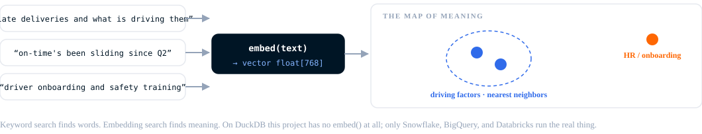
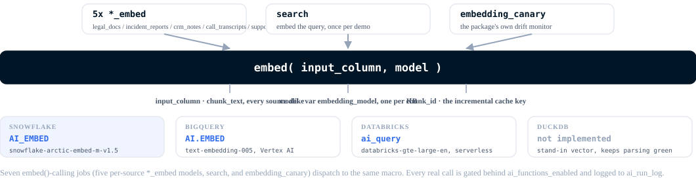

Context engineering: chunk, embed, enrich, search¶
dbt_context_engineering
turns the free text the problem couldn't reach into a
governed, searchable knowledge base, entirely in SQL, orchestrated by
dbt. The fix for exact-match SQL's ceiling isn't leaving SQL. It's SQL
that can call an embedding function.
The pipeline has five stages: chunk, embed, enrich, combine, search.
Seven sources (legal docs, incident reports, CRM notes, call transcripts,
support tickets, dispatch notes, Slack threads) each run chunk, embed,
and enrich as their own independent, end-to-end path, and converge only
at combine (knowledge_base). That's the package's own documented usage of
knowledge_base() (ADR-0006 in
dbt_context_engineering):
a conformed union of many independently-maintained sources, each keeping
its own native shape until the very last step. In a real system these
seven sources would genuinely arrive via different systems on different
schedules; this project reuses one taxonomy and prompt across all seven
classify models since it's a worked example, not because the sources
are actually identical. Real duplication (seven near-identical
embed/classify models) is the tradeoff for realistic per-source isolation.
This project's own search results are the evidence enrichment earns
its place next to embedding, not after it (see comparison).
This is a real, governed, multi-platform building block, not the whole of a RAG pattern. Roadmap covers what it still needs.
analyses/the_pattern/
breaks this same pipeline into seven numbered, runnable queries, one per
stage, each linked from its matching section below.
Chunk: on the data's logical boundaries, or not at all¶
Seven sources, three chunking strategies.
Call transcripts explode into individual spoken turns
(int_transcript_turns), then regroup into token-bounded chunks that
never span a transcript (chunk_transcripts). Legal docs, incident
reports, and CRM notes each split into sentences first
(split_legal_docs,
split_incident_reports,
split_crm_notes),
then regroup the same way into chunks that never span a document
(chunk_legal_docs, chunk_incident_reports, chunk_crm_notes). Each
of these three runs its own splitter and chunker, not a shared one:
they're different systems in this story, and each keeps its own path
end to end rather than merging into one documents corpus first.
Support tickets take none of these paths.
ticket_records_meta
never calls chunk() at all: a ticket body is already the atomic
embedding unit, so it's reshaped straight into the chunk-shaped output
chunk() would have produced, chunk_seq fixed at 1 by construction
rather than by an assumption about ticket length.
The two ops-floor sources take the same whole-record path.
dispatch_notes_records_meta
and
slack_threads_records_meta
treat one dispatch note, or one Slack thread, as one atomic operational
record, and neither calls chunk().
Each source's chunked (or reshaped) output carries client_id,
source_type, and a citation URL by the time its own *_chunks_meta
model lands, whether that row was chunked to get there or not. Nothing
unions across sources yet; that happens once, at the very end, in
combine.
A real example, the Jaffle Werke QBR transcript from comparison, split across an actual chunk boundary:
| chunk_id | client_id | source_type | chunk_text (excerpt) |
|---|---|---|---|
CT-99001::1 |
CLI-0042 |
call_transcript | Marcus Trent: Janet, thanks for taking this. I know the last two weeks have been rough, I want to own it.\nJanet Feld: Rough is generous, Marcus. The Paris storm buried a whole batch of our freight.\nMarcus Trent: I know, and it's documented on our side... |
CT-99001::2 |
CLI-0042 |
call_transcript | Janet Feld: It did. My question is whether you can actually handle our peak volume, because right now I'm not sure.\nMarcus Trent: Fair. Two things: we're issuing an SLA credit for January per your contract... |
The boundary lands on a turn. chunk_transcripts and the three
chunk_* document models bin whole units (a turn, a sentence) by
running token count and never split a unit mid-way. This project's
chunk_overlap_tokens is 0, so adjacent chunks share no context across
a cut. Overlap is a real technique for recovering that lost context;
skipping it here isn't a recommendation to skip it generally, it's just
this project's setting.
The same binning rule can produce a very short trailing chunk. IR-9001
splits into three real chunks, and the third is a single sentence,
"Reviewed with dispatch." Comparison covers what that
does to search.

Chunking costs nothing beyond ordinary SQL compute. No embed(),
generate(), or classify() call happens here.
Run it yourself:
00_raw_transcript.sql
shows CT-99001 before chunking,
01_chunk.sql
shows the same transcript after.
Embed: for recall¶
Seven embedding models, one per source
(legal_docs_embed,
incident_reports_embed,
crm_notes_embed,
call_transcripts_embed,
support_tickets_embed,
dispatch_notes_embed,
slack_threads_embed),
each incremental: the package's six-column cache metadata (ADR-0023)
means unchanged rows are never re-embedded, independently per source.
One embedding model, set by embedding_model, covers every one of the
seven: all seven must share it, or their vectors land in incomparable
spaces and cross-source ranking silently breaks (version_guard
enforces this per model, which is "a real constraint on the caller,"
in the package's own words, not something the union at the end can
check for you).

Embedding gets you recall: retrieval by meaning instead of exact string. It doesn't get you precision. In this project's own search results, a six-token trailing sentence and a contract's signature block outrank real account signal on plain cosine similarity (see comparison). That's what enrichment fixes.
Run it yourself:
02_embed.sql
shows CT-99001's chunks with their populated embedding column.
Enrich: for precision¶
Seven classify models, one per source
(legal_docs_classify,
incident_reports_classify, crm_notes_classify,
call_transcripts_classify, support_tickets_classify,
dispatch_notes_classify, slack_threads_classify), each running a
real classify() call against its own source's hashed corpus,
independently. All seven share one flat taxonomy and one prompt
(jaffle_content_type v1): account_assessment, contract_reference,
weather_disruption, vehicle_or_driver_incident,
handling_or_warehouse_error, routine_status. Each label is a
business category, not a judgment of how well the text is written, and
it matches the weather-vs-handling split the account's own root-cause
review makes (see comparison). The ops-floor text needs
no new label: weather notes land on weather_disruption, mechanical
ones on vehicle_or_driver_incident, dock and warehouse ones on
handling_or_warehouse_error, and traffic, address, access, volume,
NSF, and routine chatter on routine_status. Sharing one taxonomy
across seven independent models is itself a demo-scale simplification;
seven genuinely different source systems would plausibly want their own
prompt tuning over time, which is exactly the kind of per-source
divergence this architecture makes possible without touching the other
six.
Each source's *_embedded_classified model
(e.g. legal_docs_embedded_classified)
joins that source's own classify output onto its own embed output, so
knowledge_base carries both and search.sql can filter on the label
directly.
Same governed pattern as the embedding models: guard_batch and
log_ai_run as pre-hooks, complete_ai_run as a post-hook, gated
behind ai_functions_enabled. Not incremental, though: classify() has no
cache metadata the way embed() does, so every build reclassifies each
source's whole corpus. At this demo's scale that's a small, disclosed
cost; a larger corpus would need the equivalent of embed()'s caching
before copying this pattern as-is.
Run it yourself:
05_classify.sql
shows CT-99001's chunks with their assigned label.
Combine: a real union of seven independent sources¶
knowledge_base
unions all seven *_embedded_classified outputs into the package's
common shape: source_type, source_id, account_key, text,
embedding, ts, citation_url, classification. This is
knowledge_base()'s actual documented job: each source keeps its own
native path all the way through embedding and classification, and this
is the one place they ever meet. source_type is a real, per-source
label (Legal Document, Incident Report, CRM Notes,
Call Transcript, Support Ticket, Dispatch Note, Slack Thread),
not a passthrough of an already-unified column, because each one
genuinely is a different upstream system here. The citation URL
preserves the finer-grained artifact id (which CRM note, which incident
report, which ticket), so any result traces back to its source.
classification is an optional slot in the package's shape; this
project fills it for every source.
Dispatch notes and Slack threads are the ops floor, the place an
operational early warning shows up first. Neither carries a client_id
of its own, so account_key is derived through the route attribution
bridge (stg_route_client_attribution), using the route's dominant
client: the account with the most exceptions attributed on that route,
then the largest stop share. A dispatch note takes the dominant client
of its own route. A Slack thread takes, in order, an explicit CLI- id
it cites, else the dominant client of a cited RTE- route, else the
dominant client of a cited INC- incident's route. When none of those
resolve, account_key is null rather than guessed, so those threads
still surface in whole-corpus search but not in an account-scoped one.
What the corpus still doesn't cover: the structured tables (shipments, routes, invoices, the revenue ledger, payroll) stay out of it. Those are answered by joins, not by vector search. Free text outside the seven systems above isn't in it either, including email, driver app messages, and anything else this project doesn't model. An ops-floor record that cites no account, route, or incident id can't be attributed, so account-scoped search misses it.
Run it yourself:
03_knowledge_base.sql
shows the unioned rows for Jaffle Werke (CLI-0042) across all seven sources.
Search: by meaning, then by category¶
search.sql
embeds a query once, then runs cosine similarity against
knowledge_base. Two demos, each run twice, raw and filtered on
classification:
- Account-scoped: "late deliveries and what is driving them,"
filtered to
account_key = 'CLI-0042'; the classified run addsclassification = 'account_assessment'. - Whole-corpus: "truck accident during the Paris winter storm," no
account filter, the kind of question a join can't answer since
there's no ID to join on; the classified run adds
classification = 'weather_disruption'.
All four ran for real, against real embeddings and a real classify()
pass. The raw runs don't return a clean top 10. The classified runs
mostly do, with one disclosed gap. Comparison has the
actual ranked output for all four.
Run it yourself:
04_raw_search.sql
is the account-scoped demo, raw;
06_search_with_classify.sql
is the same demo filtered on classification.
Cosine similarity at this scale doesn't need to be indexed.
dbt run-operation create_vector_index adds one (Snowflake Cortex
Search, a BigQuery vector index, or a separately-billed Databricks
Vector Search index) for when that stops being true, torn down
explicitly rather than left running.
Sixteen AI jobs, three cost tiers¶
Everything upstream of embed/enrich costs ordinary compute, the same warehouse credits any dbt model burns. From there on, every model makes a real, billed AI-function call. Three cost tiers apply project-wide:
- Zero cost: local DuckDB runs. DuckDB has no
embed()orclassify()implementation, so nothing bills. - Cloud compute cost: the deterministic chunking layer on Snowflake, BigQuery, or Databricks. Ordinary warehouse credits, no AI billing.
- Cloud AI-function cost:
models/context/ai/*on a cloud warehouse. Real, billedembed()orclassify()calls.

Two shapes, run once per source, plus two singletons: seven
*_embed models and seven *_classify models (one pair per source),
search (embeds each demo query), and the package's own
embedding_canary monitor. Nine of those sixteen call embed()
(the seven *_embed models, search, and embedding_canary); the
other seven call classify(), dispatched to AI_CLASSIFY on Snowflake,
ai_classify on Databricks, and a schema-constrained AI.GENERATE on
BigQuery. Sixteen AI-calling jobs total, one gate. The corpus covers
seven sources: the original five plus dispatch notes and Slack threads,
attributed to an account through the route bridge described in
combine. It still
doesn't cover the structured tables, or free text this project doesn't
model. Seven independent
per-source paths, rather than one shared corpus unified before hashing,
matches knowledge_base()'s own documented usage pattern (independent
per-source paths, converged only at the union), trading seven-times the
near-duplicate boilerplate for isolation each source would realistically
need: a bad batch or a rate limit on one source's classify() call
doesn't block the other six's dbt build --select independently.
That gate is ai_functions_enabled in dbt_project.yml, false by
default. It's a real dbt +enabled config, so a disabled model can't
build even under an explicit --select. A plain dbt build never
triggers AI spend. Turning it on is one flag:
--vars '{ai_functions_enabled: true}', covering embedding_canary too, so
enabling spend is one decision, not several.
The same var also drives a second, package-level gate: generate,
classify, embed, extract, and ai_agg each refuse to fire unless
ai_functions_enabled is true for the target, checked inside the
function itself rather than a config value a caller has to remember to
use. One flag, checked at both the selection-time +enabled gate above
and inside the functions themselves.
See governance for the cost guards, audit log, and incremental design behind that gate.